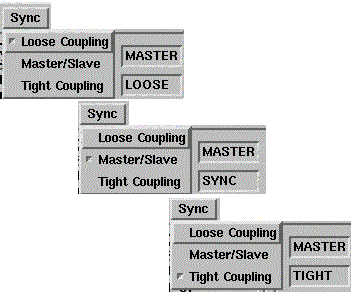

| This menu item can be selected from the Master only. |
2 fields in the information area indicate the Collaboration Status:
There are three levels of coupling (see figure above):
 Menu options and corresponding fields in the information area (increasing degree of coupling)
The Sync field of the information area is set to SYNC. This is the default value.
The Sync field of the information
area is set to TIGHT.
| For normal operation, you need not differentiate between 'Master/Slave' and 'Tight', and the terms have sometimes been used as synonyms. Only in case of a slow connection between master and slave be sure to use 'Master/Slave' and not 'Tight'. |
The Sync field of the information area is set to LOOSE.
The Telepointer allows you to point
to all renderer windows (see figure below).
If you keep the SHIFT key down while moving
the mouse
To set the telepointer to another position, release the SHIFT key, move the mouse and press SHIFT again at the new position, or move the mouse while the SHIFT key is still pressed.